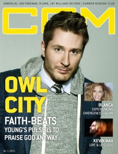

CMnexus: Contemporary Christian culture, music, and media.
|
|
Owl CityOn the cover|  | 1 July 2015
CCM Digital | Media coverage:- Jan 2010 in Relevant "The Unlikely Chart-topper is still Wide-eyed and wondering", by John Brandon
- Mar 2010 in HM "Poster: Owl City"
- May 2010 in Christianity Today "Two Minutes With...: Owl City"
- Jul 2010 in CCM Digital "Hit the Road: Ocean Eyes Tour, Riviera Theatre, Chicago, IL", by Andy Argyrakis
- May 2011 in Group "Ideas: Ministry and Media: Owl City", by Scott Firestone IV
- Jun 2011 in CCM Digital "Bright Eyes", by Caroline Lusk
- Sep 2011 in Relevant "Owl City", by Alyce Gilligan
- Jul 2012 in CCM Digital "Good Times in the Summertime", by Caroline Lusk
- 1 Jul 2015 in CCM Digital "The Pulse of Owl City", by Andrew Greer
Albums & reviews:2009: Ocean Eyes2010: Ocean Eyes: Deluxe Edition2011: All Things Bright and Beautiful2012: Shooting Star [EP]2012: The Midsummer Station2012: Live From Los Angeles DVD2014: Ultraviolet2015: Mobile Orchestra |